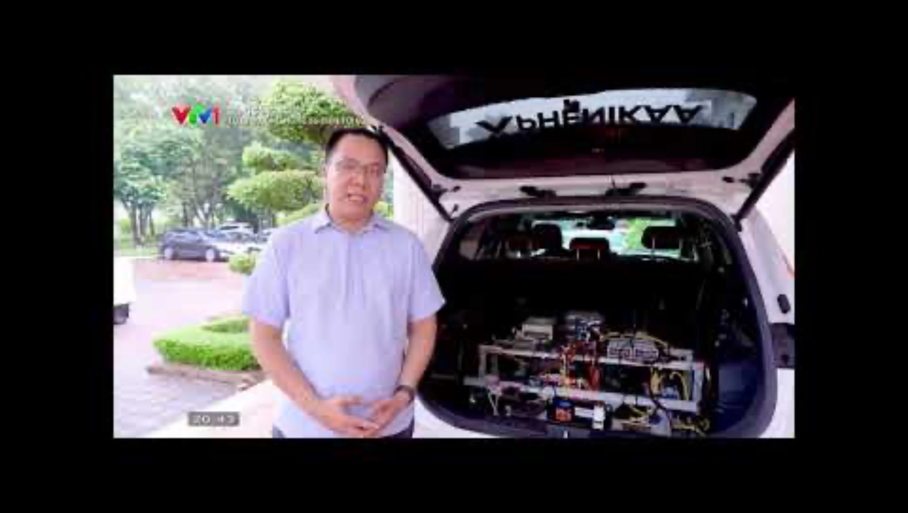
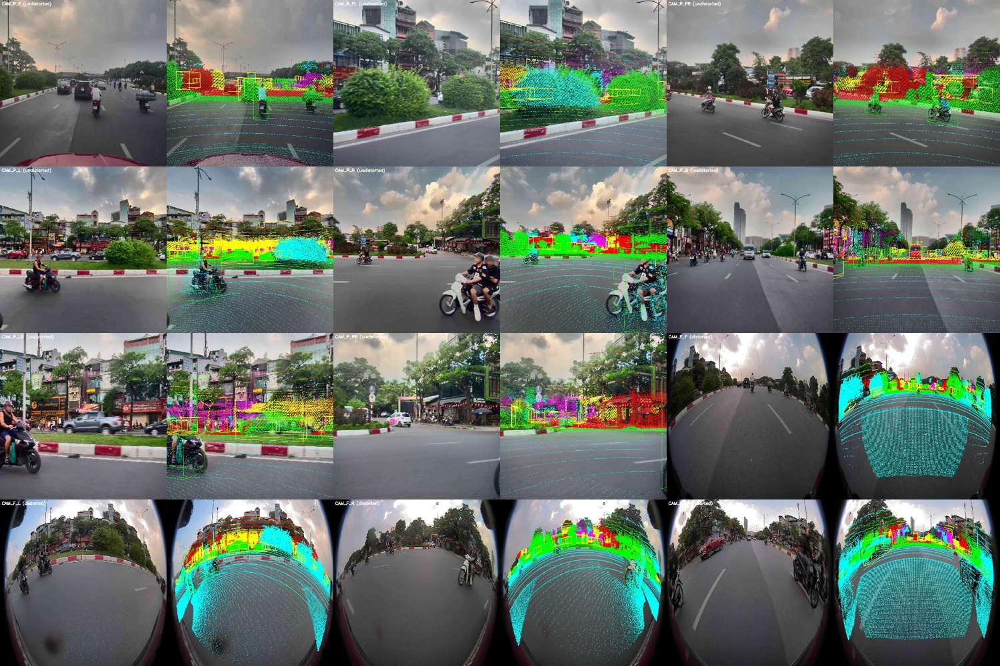

ON-VEHICLE POC
ON-VEHICLE POC
01
Open videoEnd-to-end driving
Our on-vehicle E2E proof of concept. Ongoing development and evaluation across driving scenarios.
AUTONOMOUS DRIVING RESEARCH
From driving data to on-vehicle experiments. We develop end-to-end driving systems and explore how reasoning, simulation and efficient learning can improve their performance.
Autonomous Driving Research Department
Phenikaa-X · Vietnam
THE RESEARCH PLATFORM01 / DEMONSTRATIONS
Selected demonstrations from our vehicle and data development work.
ON-VEHICLE POC
Our on-vehicle E2E proof of concept. Ongoing development and evaluation across driving scenarios.
 DATA PLATFORM
DATA PLATFORM
Inspect synchronized driving data and annotations.

Demonstrations illustrate specific development activities. The E2E system is at proof-of-concept stage; VLA integration is early research, with shadow-mode evaluation planned.
02 / THE RESEARCH PLATFORM
Our team connects data preparation, model development, vehicle integration and evaluation.

Multi-sensor capture, calibration, timestamp alignment, semi-automatic annotation and data visualization.
Perception, prediction and planning, progressing toward E2E driving with temporal context and VLA guidance.
The PhenikaaX Drive Platform and vehicle integration support efficient communication and on-vehicle execution.
HD-map-based and camera-based simulation development, closed-loop evaluation and controlled vehicle tests.
03 / SYSTEM DIRECTION
We are exploring an asynchronous VLA reasoning module alongside the E2E driving system, with arbitration between guidance and vehicle control.
8 cameras
Long-range radar
Navigation
Streaming video, memory and decision meta-actions
Asynchronous guidance to the fast system04 / RESEARCH DIRECTIONS
Selected ongoing and planned directions. We welcome discussion of related topics and methods that can deliver a measurable benefit to autonomous driving.
Architectures and temporal representations that improve planning while meeting on-vehicle compute, latency and memory constraints.
Spatial and temporal reasoning, useful driving guidance, and datasets and benchmarks that connect model understanding to driving decisions.
Data selection, learning with limited annotations, and model adaptation across traffic scenarios and operating conditions.
Dynamic scene reconstruction, including Power Foam-based methods and Gaussian splatting, to support more accurate closed-loop evaluation.
Trajectory diversity, policy improvement from driving data, and methods that reduce dependence on dedicated simulation for fine-tuning.
05 / PEOPLE & ENGINEERING
Research and implementation are supported by dedicated core teams and shared engineering groups.
Phenikaa-X
Head, Autonomous Driving
Research Department
Dolphin
Dolphin
E2E / Perception and Reasoning / Planning would work most closely with research advisors.
06 / RESEARCH COLLABORATION
We welcome conversations with researchers and labs interested in autonomous driving. Together, we can connect methodological advances with driving data, engineering and evaluation.
Head, Autonomous Driving Research Department
Dolphin Project Lead · Phenikaa-X